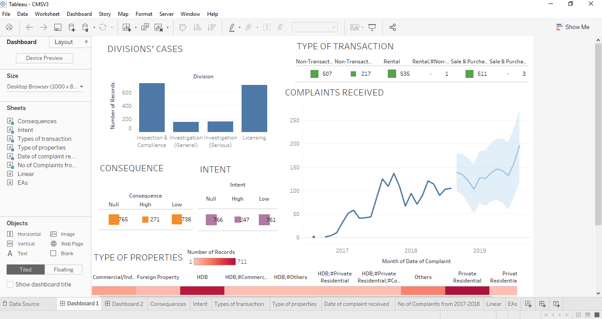
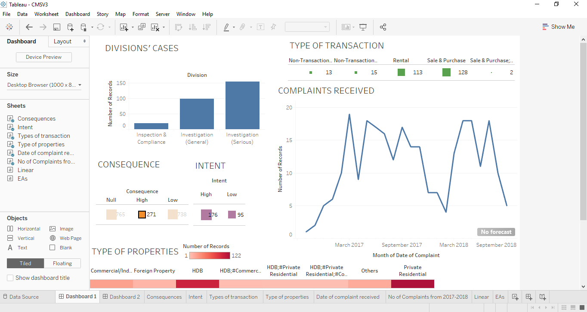
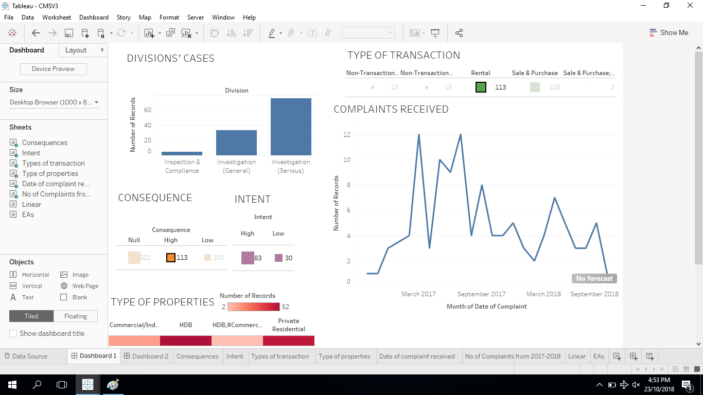

This website shows some of the snapshots of the Dashboards designed with "live" data pull from data.gov via web API calls. You may email alanchow85@gmail.com to find out more on how to develop Dashboards with softwares like Tableau, Python, or javascript.



